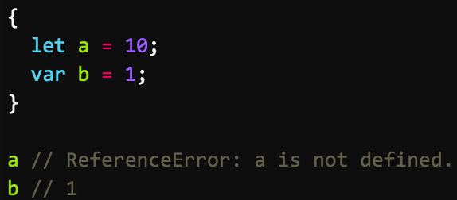
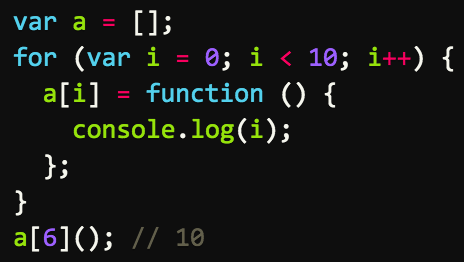
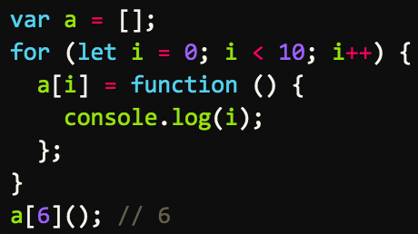
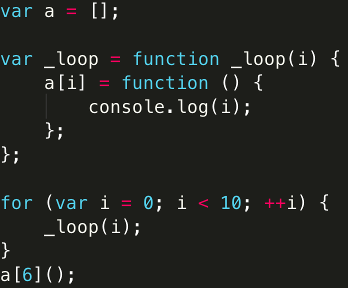

你的浏览器
不 支持
impress.js, 所以当前展示的是简化版。
为了获得更好的体验，请使用最新的
Chrome
,
Safari
或者
Firefox
浏览器。
es6 learning
by 谢晓君
es6 learning
使用ES6
变量声明
解构赋值
使用ES6
浏览器-chrome：
启用实验性javascript
转码器-babel：使用npm安装babel-cli和babel-preset-es2015包
node：
使用node运行ES6代码时，有时需要使用严格模式，具体可以参考：
ECMAScript 2015 (ES6) in Node.js
ES6声明-let命令

let声明特点
块级作用域
暂时性死区
不存在变量提升
不允许重复声明
ES5-没有块级作用域

ES6-块级作用域

=>
